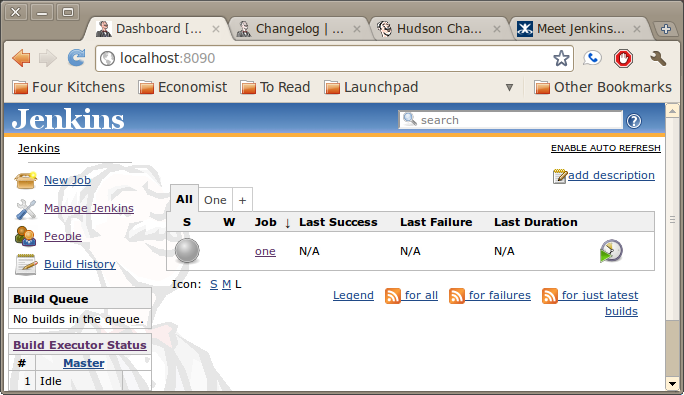
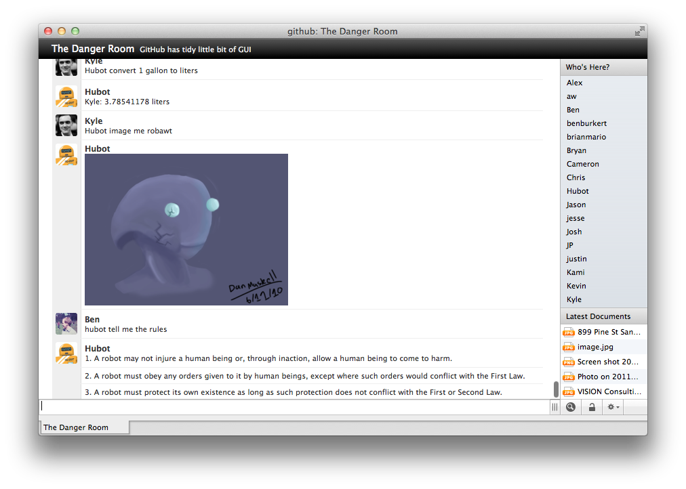

Best Practices for (Drupal) Development Teams
DON'T F*CK IT UP
Hi!
- Technical Architect, LBi NYC
- Lead Developer, WorkHabit
- @drnikki
What's a team?
- Developers
- 1+ PM
- Tech lead
- 3 – 4 creative / editorial / UX
- Clients / stakeholders
- QA
- Mystery people
Your team is everyone you talk to about the project.

What's the
VERY BIG REAL LIFE GOAL?
- SHIP
- Keep a team to ship again
Is your team okay?
- Here, just use my login.
- Um, we're waiting on the client.
- I've got that in an email somewhere. I'll forward it to you.
- Did you not see the updated comps?
- Let me check basecamp. It's on basecamp
- Basecamp
Yes, but

What makes a good team?
Things You Must Value #1
Transparency
Things You Must Value #2
Structure
Things You Must Value #3
Future You
Things You Must Have #1
Version Control
(Use git.)
Things You Must Have #2
A Ticketing System
Minimum functionality
- Connect to version control
- Connect to a wiki-type thing

Useful combinations
- Github
- Local git + local gitlab
- Local git + local JIRA
- Local subversion + local JIRA
Harmful combinations
- Anything + basecamp
- Anything + google docs
- Anything homemade
- Anything + nothing
Meh
- Redmine
- Unfuddle
- ActiveCollab
- Fogbugz
- Rally
Who me?
Tickets are for EVERYONE on the team
Things You Must Have #3
ONE Centralized Documentation Thing
(Not basecamp.)
Skype and email are not reliable sources of information
Things You Must Have #4
Development Server(s)
Work locally, show communally
- Current Dev Server: dev.example.com
- Feature X Dev Server: branchX.dev.example.com
Work locally, show individually
- Dev Server: dev.example.com
- Nikki's Server: nstevens.dev.example.com
- Nikki’s work on X:
branchX.nstevens.dev.example.com
Things You Must Have #5
Automation
Make questions self-answerable
- When is next build?
- Has x been done yet?
- What changed in the last build?
- what changed with latest copy?
Temporal
Material
Easy: Information Sharing

Easyish: Developer tools
Hardish: Developer tools
Things You Must Have
- Version Control
- Ticketing System
- Centralized Documentation
- Development Servers
- Automation